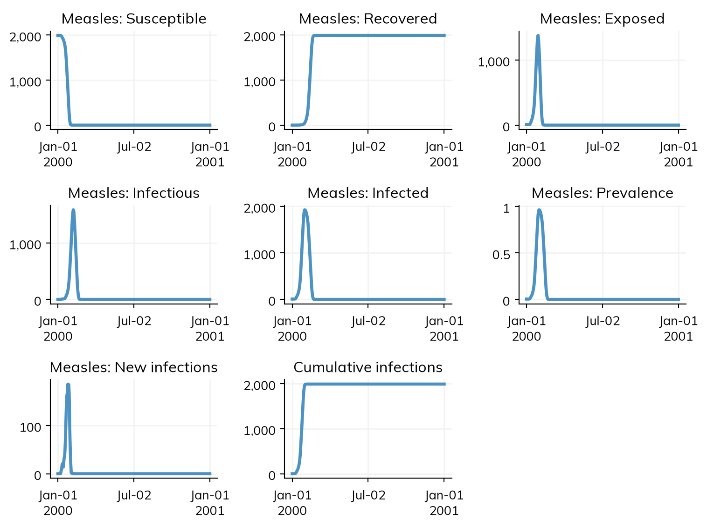
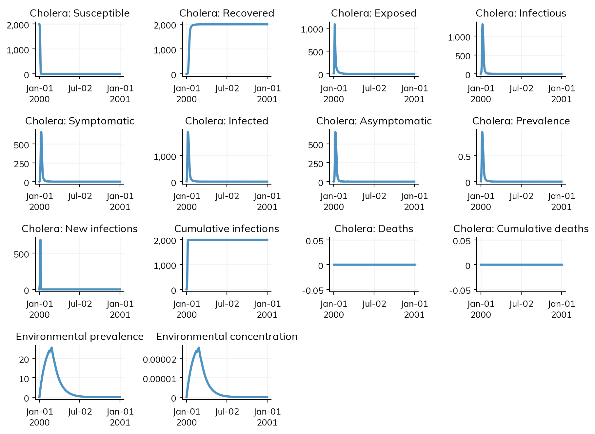
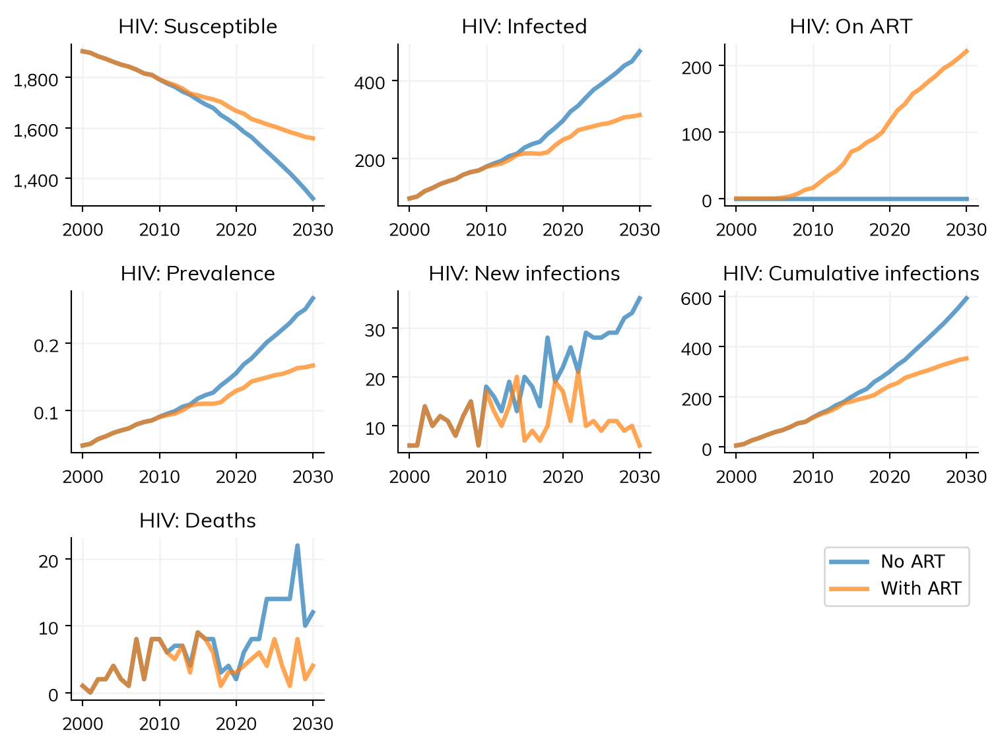
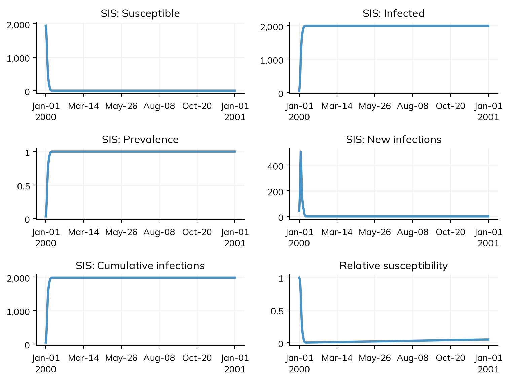
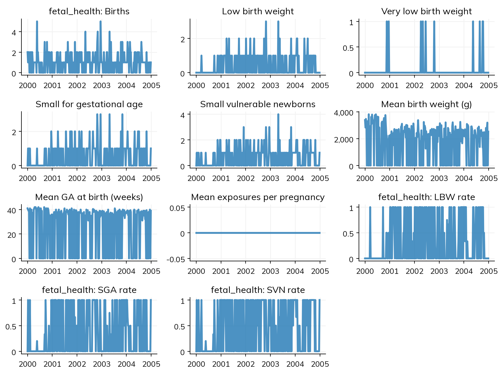
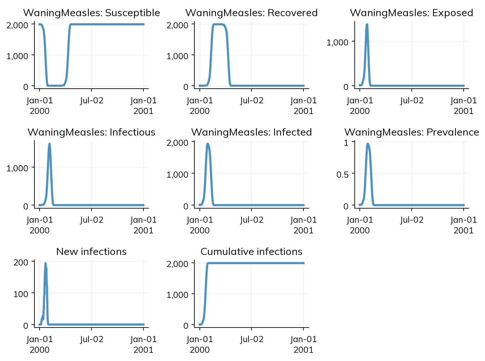

import starsim as ss
ss.options(jupyter=True)
import starsim.library as ssl
print(ssl.Measles is ssl.diseases.Measles)TrueCore Starsim (import starsim as ss) provides the framework and its generic building blocks: ss.SIR, ss.RandomNet, ss.Pregnancy, and so on. The Starsim library (import starsim.library as ssl) is a separate collection of concrete, opinionated modules built on top of those: specific diseases such as measles and cholera, specialized networks such as households, and worked examples of harder modeling patterns such as congenital infection.
The library is shipped with Starsim but is deliberately held to a lower bar than the core package. Library modules are illustrative rather than validated: parameter values are indicative, some are placeholders, and the APIs may change between versions. Treat them as starting points to copy and adapt, not as off-the-shelf models for a particular setting.
The library is where most modules that used to live in core Starsim ended up. If you are migrating older code, ss.Measles is now ssl.Measles, ss.HIV is now ssl.HIV, and so on.
Library classes are available both at the top level and via their submodule; the two are identical objects:
TrueOtherwise they behave exactly like core modules, and can be mixed freely with them:
Initializing sim with 2000 agents
Running 2000 ( 0/366) (0.00 s) ———————————————————— 0%
Running 2000.03 (10/366) (0.03 s) ———————————————————— 3%
Running 2000.05 (20/366) (0.06 s) •——————————————————— 6%
Running 2000.08 (30/366) (0.08 s) •——————————————————— 8%
Running 2000.11 (40/366) (0.11 s) ••—————————————————— 11%
Running 2000.14 (50/366) (0.13 s) ••—————————————————— 14%
Running 2000.16 (60/366) (0.15 s) •••————————————————— 17%
Running 2000.19 (70/366) (0.17 s) •••————————————————— 19%
Running 2000.22 (80/366) (0.18 s) ••••———————————————— 22%
Running 2000.25 (90/366) (0.20 s) ••••———————————————— 25%
Running 2000.27 (100/366) (0.22 s) •••••——————————————— 28%
Running 2000.3 (110/366) (0.24 s) ••••••—————————————— 30%
Running 2000.33 (120/366) (0.26 s) ••••••—————————————— 33%
Running 2000.36 (130/366) (0.27 s) •••••••————————————— 36%
Running 2000.38 (140/366) (0.29 s) •••••••————————————— 39%
Running 2000.41 (150/366) (0.31 s) ••••••••———————————— 41%
Running 2000.44 (160/366) (0.33 s) ••••••••———————————— 44%
Running 2000.47 (170/366) (0.35 s) •••••••••——————————— 47%
Running 2000.49 (180/366) (0.37 s) •••••••••——————————— 49%
Running 2000.52 (190/366) (0.39 s) ••••••••••—————————— 52%
Running 2000.55 (200/366) (0.40 s) ••••••••••—————————— 55%
Running 2000.58 (210/366) (0.42 s) •••••••••••————————— 58%
Running 2000.6 (220/366) (0.44 s) ••••••••••••———————— 60%
Running 2000.63 (230/366) (0.45 s) ••••••••••••———————— 63%
Running 2000.66 (240/366) (0.47 s) •••••••••••••——————— 66%
Running 2000.68 (250/366) (0.49 s) •••••••••••••——————— 69%
Running 2000.71 (260/366) (0.51 s) ••••••••••••••—————— 71%
Running 2000.74 (270/366) (0.53 s) ••••••••••••••—————— 74%
Running 2000.77 (280/366) (0.54 s) •••••••••••••••————— 77%
Running 2000.79 (290/366) (0.56 s) •••••••••••••••————— 80%
Running 2000.82 (300/366) (0.58 s) ••••••••••••••••———— 82%
Running 2000.85 (310/366) (0.60 s) ••••••••••••••••———— 85%
Running 2000.88 (320/366) (0.62 s) •••••••••••••••••——— 88%
Running 2000.9 (330/366) (0.64 s) ••••••••••••••••••—— 90%
Running 2000.93 (340/366) (0.66 s) ••••••••••••••••••—— 93%
Running 2000.96 (350/366) (0.68 s) •••••••••••••••••••— 96%
Running 2000.99 (360/366) (0.69 s) •••••••••••••••••••— 99%
Figure(768x576)
The library’s outbreak diseases specify their natural history in days (incubation periods of a week or two, illness lasting days). With the default yearly timestep these durations collapse to zero and the dynamics are meaningless — ssl.Cholera in particular produces no infections at all, because its environmental reservoir never has time to build up. Set dt=ss.days(1) (or ss.weeks(1)) for these models. See Time handling for more on timesteps.
The library includes four example diseases, spanning a range of complexity:
| Class | Base | Description |
|---|---|---|
ssl.Measles |
ss.SEIR |
Measles as an SEIR model, with CDC natural history parameters |
ssl.Ebola |
ss.SEIR |
Ebola with severe disease and continued transmission from unburied bodies |
ssl.Cholera |
ss.SEIR |
Cholera with symptomatic/asymptomatic infection, plus indirect transmission via a decaying environmental reservoir |
ssl.HIV |
ss.Infection |
HIV with CD4 count dynamics, CD4-dependent mortality, and vertical transmission |
All three latent-period models subclass ss.SEIR, which owns the S→E→I→R lifecycle. Measles supplies only parameter values. Ebola and Cholera additionally override set_progression() for their richer natural histories (severe disease and burial; symptoms and shedding), while inheriting the compartment transitions and incidence accounting. Cholera also extends infect() to add environmental transmission on top of the usual person-to-person route — the pattern to follow for any waterborne, vector-borne, or otherwise indirectly transmitted disease.
Initializing sim with 2000 agents
Running 2000 ( 0/366) (0.00 s) ———————————————————— 0%
Running 2000.03 (10/366) (0.04 s) ———————————————————— 3%
Running 2000.05 (20/366) (0.06 s) •——————————————————— 6%
Running 2000.08 (30/366) (0.08 s) •——————————————————— 8%
Running 2000.11 (40/366) (0.11 s) ••—————————————————— 11%
Running 2000.14 (50/366) (0.13 s) ••—————————————————— 14%
Running 2000.16 (60/366) (0.15 s) •••————————————————— 17%
Running 2000.19 (70/366) (0.18 s) •••————————————————— 19%
Running 2000.22 (80/366) (0.20 s) ••••———————————————— 22%
Running 2000.25 (90/366) (0.22 s) ••••———————————————— 25%
Running 2000.27 (100/366) (0.24 s) •••••——————————————— 28%
Running 2000.3 (110/366) (0.27 s) ••••••—————————————— 30%
Running 2000.33 (120/366) (0.29 s) ••••••—————————————— 33%
Running 2000.36 (130/366) (0.32 s) •••••••————————————— 36%
Running 2000.38 (140/366) (0.34 s) •••••••————————————— 39%
Running 2000.41 (150/366) (0.36 s) ••••••••———————————— 41%
Running 2000.44 (160/366) (0.39 s) ••••••••———————————— 44%
Running 2000.47 (170/366) (0.41 s) •••••••••——————————— 47%
Running 2000.49 (180/366) (0.43 s) •••••••••——————————— 49%
Running 2000.52 (190/366) (0.46 s) ••••••••••—————————— 52%
Running 2000.55 (200/366) (0.48 s) ••••••••••—————————— 55%
Running 2000.58 (210/366) (0.50 s) •••••••••••————————— 58%
Running 2000.6 (220/366) (0.53 s) ••••••••••••———————— 60%
Running 2000.63 (230/366) (0.55 s) ••••••••••••———————— 63%
Running 2000.66 (240/366) (0.57 s) •••••••••••••——————— 66%
Running 2000.68 (250/366) (0.60 s) •••••••••••••——————— 69%
Running 2000.71 (260/366) (0.62 s) ••••••••••••••—————— 71%
Running 2000.74 (270/366) (0.64 s) ••••••••••••••—————— 74%
Running 2000.77 (280/366) (0.66 s) •••••••••••••••————— 77%
Running 2000.79 (290/366) (0.69 s) •••••••••••••••————— 80%
Running 2000.82 (300/366) (0.71 s) ••••••••••••••••———— 82%
Running 2000.85 (310/366) (0.73 s) ••••••••••••••••———— 85%
Running 2000.88 (320/366) (0.75 s) •••••••••••••••••——— 88%
Running 2000.9 (330/366) (0.78 s) ••••••••••••••••••—— 90%
Running 2000.93 (340/366) (0.80 s) ••••••••••••••••••—— 93%
Running 2000.96 (350/366) (0.82 s) •••••••••••••••••••— 96%
Running 2000.99 (360/366) (0.85 s) •••••••••••••••••••— 99%
Figure(896x672)
Note the extra env_prev and env_conc results, which track the environmental reservoir.
ssl.HIV comes with two companion modules that illustrate how a disease, an intervention, and an analyzer fit together:
ssl.ART is an intervention that scales up treatment coverage over specified years, reducing transmissibility by art_efficacy and raising CD4 counts back towards cd4_max.ssl.CD4_analyzer is an analyzer that records every agent’s CD4 count at every timestep.Since HIV mortality is CD4-dependent, treatment reduces deaths as well as transmission:
Unlike the outbreak diseases above, HIV plays out over years, so a yearly timestep and a multi-decade horizon are appropriate:
endemic = dict(start=2000, stop=2030, n_agents=2000)
hiv = lambda: ssl.HIV(beta=ss.peryear(0.05), init_prev=0.05)
net = lambda: ss.RandomNet(n_contacts=ss.poisson(2))
s1 = ss.Sim(diseases=hiv(), networks=net(), label='No ART', **endemic)
s2 = ss.Sim(diseases=hiv(), networks=net(), label='With ART', **endemic,
interventions=ssl.ART(year=[2005, 2015], coverage=[0, 0.9]))
msim = ss.parallel(s1, s2)
msim.plot('hiv')
for sim in msim.sims:
print(f'{sim.label}: {sim.results.hiv.new_deaths.sum():n} deaths, '
f'{sim.results.hiv.prevalence[-1]:0.1%} prevalence in 2030')Initializing sim "No ART" with 2000 agentsInitializing sim "With ART" with 2000 agents
Running "No ART": 2000 ( 0/31) (0.00 s) ———————————————————— 3%
Running "With ART": 2000 ( 0/31) (0.00 s) ———————————————————— 3%
Running "No ART": 2010 (10/31) (0.03 s) •••••••————————————— 35%
Running "With ART": 2010 (10/31) (0.03 s) •••••••————————————— 35%
Running "No ART": 2020 (20/31) (0.05 s) •••••••••••••——————— 68%
Running "With ART": 2020 (20/31) (0.06 s) •••••••••••••——————— 68%
Running "No ART": 2030 (30/31) (0.08 s) •••••••••••••••••••• 100%
Running "With ART": 2030 (30/31) (0.09 s) •••••••••••••••••••• 100%
Figure(768x576)
No ART: 218 deaths, 26.7% prevalence in 2030
With ART: 135 deaths, 16.7% prevalence in 2030ART only offers treatment to agents infected art_delay ago, so it has no effect once an epidemic has saturated and there are no newly infected agents left. If you see n_art stuck at zero, check that transmission is still ongoing when treatment starts.
| Class | Base | Description |
|---|---|---|
ssl.HouseholdNet |
ss.Network |
Households built from DHS-style survey data, optionally evolving over time |
ssl.DiskNet |
ss.Network |
Agents move within a unit square and connect to others within a given radius |
ssl.ErdosRenyiNet |
ss.DynamicNetwork |
Every possible edge is created with probability p each timestep |
ssl.NullNet |
ss.Network |
Self-connections only, with zero transmission |
DiskNet is a spatial network: each agent has an x, y position and a heading, moves at speed v each timestep, bounces off the walls of the unit square, and is connected to every agent within radius r. Because contacts are determined by position, epidemics spread as a wave rather than uniformly:
Initializing sim with 2000 agents
Running 2000 ( 0/366) (0.00 s) ———————————————————— 0%
Running 2000.03 (10/366) (0.30 s) ———————————————————— 3%
Running 2000.05 (20/366) (0.59 s) •——————————————————— 6%
Running 2000.08 (30/366) (0.87 s) •——————————————————— 8%
Running 2000.11 (40/366) (1.16 s) ••—————————————————— 11%
Running 2000.14 (50/366) (1.44 s) ••—————————————————— 14%
Running 2000.16 (60/366) (1.73 s) •••————————————————— 17%
Running 2000.19 (70/366) (2.01 s) •••————————————————— 19%
Running 2000.22 (80/366) (2.30 s) ••••———————————————— 22%
Running 2000.25 (90/366) (2.59 s) ••••———————————————— 25%
Running 2000.27 (100/366) (2.87 s) •••••——————————————— 28%
Running 2000.3 (110/366) (3.15 s) ••••••—————————————— 30%
Running 2000.33 (120/366) (3.43 s) ••••••—————————————— 33%
Running 2000.36 (130/366) (3.71 s) •••••••————————————— 36%
Running 2000.38 (140/366) (4.01 s) •••••••————————————— 39%
Running 2000.41 (150/366) (4.29 s) ••••••••———————————— 41%
Running 2000.44 (160/366) (4.59 s) ••••••••———————————— 44%
Running 2000.47 (170/366) (4.87 s) •••••••••——————————— 47%
Running 2000.49 (180/366) (5.15 s) •••••••••——————————— 49%
Running 2000.52 (190/366) (5.43 s) ••••••••••—————————— 52%
Running 2000.55 (200/366) (5.71 s) ••••••••••—————————— 55%
Running 2000.58 (210/366) (6.00 s) •••••••••••————————— 58%
Running 2000.6 (220/366) (6.30 s) ••••••••••••———————— 60%
Running 2000.63 (230/366) (6.60 s) ••••••••••••———————— 63%
Running 2000.66 (240/366) (6.90 s) •••••••••••••——————— 66%
Running 2000.68 (250/366) (7.19 s) •••••••••••••——————— 69%
Running 2000.71 (260/366) (7.49 s) ••••••••••••••—————— 71%
Running 2000.74 (270/366) (7.78 s) ••••••••••••••—————— 74%
Running 2000.77 (280/366) (8.07 s) •••••••••••••••————— 77%
Running 2000.79 (290/366) (8.36 s) •••••••••••••••————— 80%
Running 2000.82 (300/366) (8.64 s) ••••••••••••••••———— 82%
Running 2000.85 (310/366) (8.93 s) ••••••••••••••••———— 85%
Running 2000.88 (320/366) (9.22 s) •••••••••••••••••——— 88%
Running 2000.9 (330/366) (9.50 s) ••••••••••••••••••—— 90%
Running 2000.93 (340/366) (9.78 s) ••••••••••••••••••—— 93%
Running 2000.96 (350/366) (10.06 s) •••••••••••••••••••— 96%
Running 2000.99 (360/366) (10.34 s) •••••••••••••••••••— 99%
Figure(768x576)
ErdosRenyiNet is the classic random graph, useful when you want to compare against analytic results. For general-purpose random mixing, prefer ss.RandomNet, which is much faster. NullNet gives every agent a single self-contact with zero transmission weight, which is handy as a placeholder while developing a model that doesn’t yet have a real network.
ssl.HouseholdNet is the most substantial library network. It builds households from DHS household survey data, overriding each agent’s age and sex to match a randomly drawn real household. With dynamic=True (the default) households also evolve: one woman is designated head of each household, pregnant non-heads may move out to form new households, and births are added to their mother’s household.
Real DHS data requires registration, so dhs_data='default' generates synthetic data with the same structure for demos and testing:
import numpy as np
sim = ss.Sim(diseases='sis', networks=ssl.HouseholdNet(dhs_data='default'),
demographics=ss.Pregnancy(), **endemic)
sim.run()
# Note: use the sim's copy of the network, since modules are copied on initialization
net = sim.networks.householdnet
hh_ids = net.household_ids[net.household_ids.notnan] # Unborn agents have no household
sizes = np.bincount(hh_ids.astype(int))
sizes = sizes[sizes > 0]
print(f'Households: {len(sizes)}; mean size: {sizes.mean():0.1f}; max size: {sizes.max()}')
print(f'Mean age: {sim.people.age.mean():0.1f} years')Initializing sim with 2000 agents
Running 2000 ( 0/31) (0.00 s) ———————————————————— 3%
Running 2010 (10/31) (0.06 s) •••••••————————————— 35%
Running 2020 (20/31) (0.13 s) •••••••••••••——————— 68%
Running 2030 (30/31) (0.20 s) •••••••••••••••••••• 100%
Households: 991; mean size: 3.3; max size: 11
Mean age: 48.1 yearsTo use real data, download a Household Recode (HR) dataset in Stata format and load it with HouseholdNet.load_dhs():
HouseholdNet overwrites the age and sex of every agent when it initializes. Use it with caution alongside other modules that depend on or modify age and sex.
The ssl.mnch submodule contains examples of vertical transmission and birth outcomes — patterns that are considerably harder to discover than a standard disease module. All of them build on ss.Pregnancy and ss.PrenatalNet.
| Class | Base | Description |
|---|---|---|
ssl.mnch.CongenitalDisease |
ss.SIR |
Congenital outcomes (stillbirth, congenital infection, normal) via the generic congenital framework |
ssl.mnch.NeonatalSepsis |
ss.SIR |
Infects newborns at birth and kills some within days |
ssl.mnch.FetalHealth |
ss.Module |
Tracks fetal growth and birth weight outcomes (LBW, VLBW, SGA) |
ssl.mnch.fetal_infection |
ss.Connector |
Links a disease to fetal health outcomes |
ssl.mnch.treat_pregnant |
ss.Intervention |
Treats infected pregnant women and partially reverses fetal damage |
CongenitalDisease demonstrates the generic congenital framework built into ss.Infection. When transmission occurs to an unborn agent via ss.PrenatalNet, set_congenital() samples an outcome from the birth_outcomes distribution and schedules it around delivery time; step_congenital() then executes it. Lethal outcomes call request_death(), while non-lethal outcomes set a boolean state. Fetal losses ('stillborn', 'miscarriage') are scheduled one timestep before delivery so that they happen in utero — otherwise ss.Pregnancy, which runs earlier in the integration loop, would already have delivered the fetus and the loss would be recorded as a live birth followed by a neonatal death:
mnch_pars = dict(start=2000, stop=2005, n_agents=2000, dt=ss.weeks(1))
sim = ss.Sim(
diseases = ssl.mnch.CongenitalDisease(beta=ss.peryear(20), init_prev=0.2),
demographics = [ss.Pregnancy(fertility_rate=ss.freqperyear(100), burnin=True), ss.Deaths()],
networks = [ss.PrenatalNet(), ss.RandomNet()],
**mnch_pars,
)
sim.run()
preg = sim.results.pregnancy
print('Births:', preg.births.sum())
print('Stillbirths:', preg.stillbirths.sum())
print('Congenital infections:', sim.diseases.congenitaldisease.congenital.sum())Initializing sim with 2000 agents
Running 2000 ( 0/261) (0.00 s) ———————————————————— 0%
Running 2000.19 (10/261) (0.07 s) ———————————————————— 4%
Running 2000.38 (20/261) (0.13 s) •——————————————————— 8%
Running 2000.58 (30/261) (0.20 s) ••—————————————————— 12%
Running 2000.77 (40/261) (0.26 s) •••————————————————— 16%
Running 2000.96 (50/261) (0.32 s) •••————————————————— 20%
Running 2001.15 (60/261) (0.39 s) ••••———————————————— 23%
Running 2001.34 (70/261) (0.45 s) •••••——————————————— 27%
Running 2001.53 (80/261) (0.51 s) ••••••—————————————— 31%
Running 2001.73 (90/261) (0.58 s) ••••••—————————————— 35%
Running 2001.92 (100/261) (0.65 s) •••••••————————————— 39%
Running 2002.11 (110/261) (0.71 s) ••••••••———————————— 43%
Running 2002.3 (120/261) (0.78 s) •••••••••——————————— 46%
Running 2002.49 (130/261) (0.85 s) ••••••••••—————————— 50%
Running 2002.68 (140/261) (0.91 s) ••••••••••—————————— 54%
Running 2002.88 (150/261) (0.97 s) •••••••••••————————— 58%
Running 2003.07 (160/261) (1.04 s) ••••••••••••———————— 62%
Running 2003.26 (170/261) (1.10 s) •••••••••••••——————— 66%
Running 2003.45 (180/261) (1.17 s) •••••••••••••——————— 69%
Running 2003.64 (190/261) (1.23 s) ••••••••••••••—————— 73%
Running 2003.84 (200/261) (1.30 s) •••••••••••••••————— 77%
Running 2004.03 (210/261) (1.36 s) ••••••••••••••••———— 81%
Running 2004.22 (220/261) (1.43 s) ••••••••••••••••———— 85%
Running 2004.41 (230/261) (1.49 s) •••••••••••••••••——— 89%
Running 2004.6 (240/261) (1.55 s) ••••••••••••••••••—— 92%
Running 2004.79 (250/261) (1.62 s) •••••••••••••••••••— 96%
Running 2004.99 (260/261) (1.68 s) •••••••••••••••••••• 100%
Births: 189.0
Stillbirths: 81.0
Congenital infections: 91The stillbirth and congenital-infection counts should track the birth_outcomes probabilities (0.3 and 0.4 here).
To use the framework in your own disease, define birth_outcome_keys and birth_outcomes in your pars, add a matching ti_<key> state for each outcome (plus a boolean state for each non-lethal one), and call self.step_congenital() from step_state(). Outcomes named 'stillborn', 'miscarriage', or 'neonatal_deaths' are treated as deaths; the first two fire before delivery and the third after it.
NeonatalSepsis illustrates that neonatal death detection is passive: any mechanism that kills an agent aged 0–28 days is automatically classified as a neonatal death by the ss.Pregnancy module, with no registration or callback needed. Results therefore appear on the pregnancy module, not the disease:
sim = ss.Sim(
diseases = ssl.mnch.NeonatalSepsis(),
demographics = [ss.Pregnancy(fertility_rate=ss.freqperyear(100), burnin=True), ss.Deaths()],
networks = [ss.PrenatalNet(), ss.RandomNet()],
**mnch_pars,
)
sim.run()
print('New infections:', sim.results.neonatalsepsis.new_infections.sum())
print('Births:', sim.results.pregnancy.births.sum())
print('Neonatal deaths:', sim.results.pregnancy.neonatal_deaths.sum())Initializing sim with 2000 agents
Running 2000 ( 0/261) (0.00 s) ———————————————————— 0%
Running 2000.19 (10/261) (0.31 s) ———————————————————— 4%
Running 2000.38 (20/261) (0.36 s) •——————————————————— 8%
Running 2000.58 (30/261) (0.41 s) ••—————————————————— 12%
Running 2000.77 (40/261) (0.47 s) •••————————————————— 16%
Running 2000.96 (50/261) (0.52 s) •••————————————————— 20%
Running 2001.15 (60/261) (0.58 s) ••••———————————————— 23%
Running 2001.34 (70/261) (0.64 s) •••••——————————————— 27%
Running 2001.53 (80/261) (0.70 s) ••••••—————————————— 31%
Running 2001.73 (90/261) (0.75 s) ••••••—————————————— 35%
Running 2001.92 (100/261) (0.81 s) •••••••————————————— 39%
Running 2002.11 (110/261) (0.87 s) ••••••••———————————— 43%
Running 2002.3 (120/261) (0.93 s) •••••••••——————————— 46%
Running 2002.49 (130/261) (0.99 s) ••••••••••—————————— 50%
Running 2002.68 (140/261) (1.04 s) ••••••••••—————————— 54%
Running 2002.88 (150/261) (1.10 s) •••••••••••————————— 58%
Running 2003.07 (160/261) (1.16 s) ••••••••••••———————— 62%
Running 2003.26 (170/261) (1.21 s) •••••••••••••——————— 66%
Running 2003.45 (180/261) (1.27 s) •••••••••••••——————— 69%
Running 2003.64 (190/261) (1.33 s) ••••••••••••••—————— 73%
Running 2003.84 (200/261) (1.39 s) •••••••••••••••————— 77%
Running 2004.03 (210/261) (1.45 s) ••••••••••••••••———— 81%
Running 2004.22 (220/261) (1.51 s) ••••••••••••••••———— 85%
Running 2004.41 (230/261) (1.56 s) •••••••••••••••••——— 89%
Running 2004.6 (240/261) (1.62 s) ••••••••••••••••••—— 92%
Running 2004.79 (250/261) (1.68 s) •••••••••••••••••••— 96%
Running 2004.99 (260/261) (1.74 s) •••••••••••••••••••• 100%
New infections: 43.0
Births: 216.0
Neonatal deaths: 32.0FetalHealth is deliberately disease-agnostic: it tracks a baseline fetal weight percentile per pregnancy and exposes two levers that other modules pull — bringing delivery forward (preterm risk) and accumulating growth restriction (low birth weight). At delivery it computes birth_weight and classifies newborns as LBW, VLBW, or SGA.
The fetal_infection connector pulls those levers when a pregnant woman is infected, and the treat_pregnant intervention partially reverses the damage when she is treated. Note that FetalHealth is passed via custom, since it is not a disease, network, demographic, or intervention:
sim = ss.Sim(
diseases = ss.SIR(beta=ss.peryear(20)),
demographics = [ss.Pregnancy(fertility_rate=ss.freqperyear(100), burnin=True), ss.Deaths()],
connectors = ssl.mnch.fetal_infection(),
interventions = ssl.mnch.treat_pregnant(disease='sir', start_year=2005),
custom = ssl.mnch.FetalHealth(),
networks = [ss.PrenatalNet(), ss.RandomNet()],
**mnch_pars,
)
sim.run()
sim.plot('fetal_health')Initializing sim with 2000 agents
Running 2000 ( 0/261) (0.00 s) ———————————————————— 0%
Running 2000.19 (10/261) (0.07 s) ———————————————————— 4%
Running 2000.38 (20/261) (0.14 s) •——————————————————— 8%
Running 2000.58 (30/261) (0.22 s) ••—————————————————— 12%
Running 2000.77 (40/261) (0.29 s) •••————————————————— 16%
Running 2000.96 (50/261) (0.36 s) •••————————————————— 20%
Running 2001.15 (60/261) (0.42 s) ••••———————————————— 23%
Running 2001.34 (70/261) (0.49 s) •••••——————————————— 27%
Running 2001.53 (80/261) (0.57 s) ••••••—————————————— 31%
Running 2001.73 (90/261) (0.64 s) ••••••—————————————— 35%
Running 2001.92 (100/261) (0.71 s) •••••••————————————— 39%
Running 2002.11 (110/261) (0.79 s) ••••••••———————————— 43%
Running 2002.3 (120/261) (0.86 s) •••••••••——————————— 46%
Running 2002.49 (130/261) (0.93 s) ••••••••••—————————— 50%
Running 2002.68 (140/261) (1.00 s) ••••••••••—————————— 54%
Running 2002.88 (150/261) (1.07 s) •••••••••••————————— 58%
Running 2003.07 (160/261) (1.14 s) ••••••••••••———————— 62%
Running 2003.26 (170/261) (1.21 s) •••••••••••••——————— 66%
Running 2003.45 (180/261) (1.28 s) •••••••••••••——————— 69%
Running 2003.64 (190/261) (1.35 s) ••••••••••••••—————— 73%
Running 2003.84 (200/261) (1.43 s) •••••••••••••••————— 77%
Running 2004.03 (210/261) (1.50 s) ••••••••••••••••———— 81%
Running 2004.22 (220/261) (1.58 s) ••••••••••••••••———— 85%
Running 2004.41 (230/261) (1.64 s) •••••••••••••••••——— 89%
Running 2004.6 (240/261) (1.71 s) ••••••••••••••••••—— 92%
Running 2004.79 (250/261) (1.79 s) •••••••••••••••••••— 96%
Running 2004.99 (260/261) (1.86 s) •••••••••••••••••••• 100%
Figure(896x672)
To adapt this to a different disease, subclass fetal_infection and override _apply_damage() with disease-specific logic — for example, applying a larger growth penalty for severe infections than mild ones.
Because library modules are ordinary Starsim modules, the usual customization routes all apply. The lightest touch is to override parameters:
For structural changes, subclass. Here we give measles waning immunity by making recovered agents susceptible again after a delay:
class WaningMeasles(ssl.Measles):
def __init__(self, dur_immune=ss.years(1), **kwargs):
super().__init__(**kwargs)
self.define_pars(dur_immune=dur_immune)
self.update_pars(**kwargs)
self.define_states(ss.FloatArr('ti_susceptible', label='Time of losing immunity'))
return
def set_prognoses(self, uids, sources=None):
super().set_prognoses(uids, sources)
self.ti_susceptible[uids] = self.ti_recovered[uids] + self.pars.dur_immune / self.t.dt
return
def step_state(self):
super().step_state()
waned = (self.recovered & (self.ti_susceptible <= self.ti)).uids
self.recovered[waned] = False
self.susceptible[waned] = True
return
sim = ss.Sim(diseases=WaningMeasles(dur_immune=ss.days(60), beta=ss.perday(0.3)),
networks=ss.RandomNet(), **outbreak)
sim.run()
sim.plot('waningmeasles')
res = sim.results.waningmeasles
print(f'Susceptible at end: {res.n_susceptible[-1]:n}; recovered at end: {res.n_recovered[-1]:n}')Initializing sim with 2000 agents
Running 2000 ( 0/366) (0.00 s) ———————————————————— 0%
Running 2000.03 (10/366) (0.02 s) ———————————————————— 3%
Running 2000.05 (20/366) (0.05 s) •——————————————————— 6%
Running 2000.08 (30/366) (0.08 s) •——————————————————— 8%
Running 2000.11 (40/366) (0.10 s) ••—————————————————— 11%
Running 2000.14 (50/366) (0.12 s) ••—————————————————— 14%
Running 2000.16 (60/366) (0.13 s) •••————————————————— 17%
Running 2000.19 (70/366) (0.15 s) •••————————————————— 19%
Running 2000.22 (80/366) (0.17 s) ••••———————————————— 22%
Running 2000.25 (90/366) (0.19 s) ••••———————————————— 25%
Running 2000.27 (100/366) (0.21 s) •••••——————————————— 28%
Running 2000.3 (110/366) (0.23 s) ••••••—————————————— 30%
Running 2000.33 (120/366) (0.25 s) ••••••—————————————— 33%
Running 2000.36 (130/366) (0.27 s) •••••••————————————— 36%
Running 2000.38 (140/366) (0.29 s) •••••••————————————— 39%
Running 2000.41 (150/366) (0.31 s) ••••••••———————————— 41%
Running 2000.44 (160/366) (0.32 s) ••••••••———————————— 44%
Running 2000.47 (170/366) (0.34 s) •••••••••——————————— 47%
Running 2000.49 (180/366) (0.36 s) •••••••••——————————— 49%
Running 2000.52 (190/366) (0.38 s) ••••••••••—————————— 52%
Running 2000.55 (200/366) (0.40 s) ••••••••••—————————— 55%
Running 2000.58 (210/366) (0.42 s) •••••••••••————————— 58%
Running 2000.6 (220/366) (0.44 s) ••••••••••••———————— 60%
Running 2000.63 (230/366) (0.46 s) ••••••••••••———————— 63%
Running 2000.66 (240/366) (0.48 s) •••••••••••••——————— 66%
Running 2000.68 (250/366) (0.49 s) •••••••••••••——————— 69%
Running 2000.71 (260/366) (0.51 s) ••••••••••••••—————— 71%
Running 2000.74 (270/366) (0.53 s) ••••••••••••••—————— 74%
Running 2000.77 (280/366) (0.55 s) •••••••••••••••————— 77%
Running 2000.79 (290/366) (0.57 s) •••••••••••••••————— 80%
Running 2000.82 (300/366) (0.59 s) ••••••••••••••••———— 82%
Running 2000.85 (310/366) (0.61 s) ••••••••••••••••———— 85%
Running 2000.88 (320/366) (0.62 s) •••••••••••••••••——— 88%
Running 2000.9 (330/366) (0.64 s) ••••••••••••••••••—— 90%
Running 2000.93 (340/366) (0.66 s) ••••••••••••••••••—— 93%
Running 2000.96 (350/366) (0.68 s) •••••••••••••••••••— 96%
Running 2000.99 (360/366) (0.70 s) •••••••••••••••••••— 99%
Figure(768x576)
Susceptible at end: 1992; recovered at end: 0The recovered population drains back into the susceptible pool, as intended. Note that this alone does not produce a second wave: the outbreak burns out before immunity wanes, so there are no infectious agents left to restart it. Recurring waves need a continuing source of infection — births (ss.Births), importation, or a slower-burning disease.
If you find yourself copying a library module wholesale and editing it, that is also a perfectly good outcome — it’s what these modules are for. See Adding new modules for a fuller treatment of writing modules from scratch.
New library modules are welcome, particularly ones that demonstrate a modeling pattern that is otherwise hard to discover. See starsim/library/README.md for the specific conventions, and Contributing for the general process.